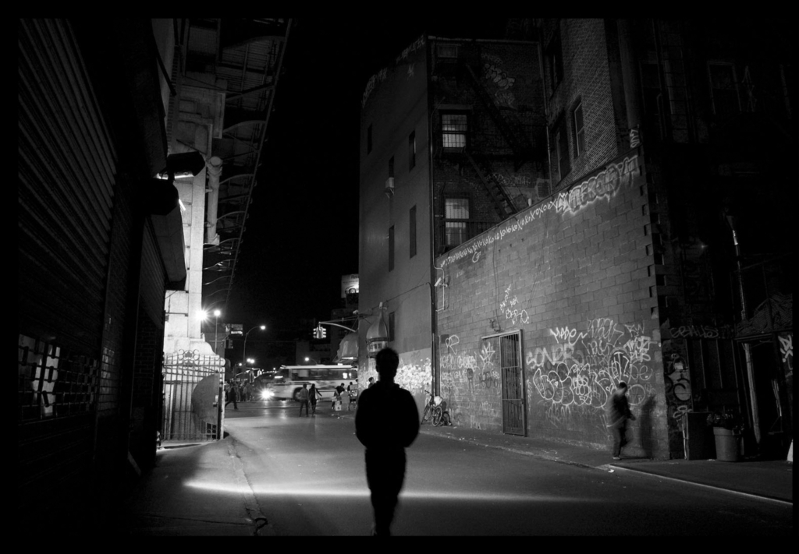

Áramszünet a 3. sugárúton – Sötétség egy teljes blokkon
Hétfő este pontosan 20:00 órakor hirtelen sötétség borult a Bronx 3. sugárútjának egyik teljes blokkjára. A hirtelen beállt áramszünet több tucat házat, boltot és egy helyi éttermet is érintett, miközben az utca lakói tanácstalanul gyertyafény mellett próbálták átvészelni az estét.
„Éppen vacsorát főztem, amikor minden elsötétült” – mesélte Lydia Ramos, a környék egyik lakója. „Először azt hittük, csak a házunkban van gond, de aztán láttuk, hogy az egész utca sötétbe borult.”
A helyi áramszolgáltató gyorsan reagált: szakembereik kevesebb mint fél órán belül megkezdték a hibakeresést. Kiderült, hogy egy elöregedett transzformátor okozta a hibát, amelyet a késő esti órákra sikerült kicserélni.
Az áramszolgáltatás három órán belül helyreállt, és az utca újra fénybe borult. Szerencsére személyi sérülés vagy komolyabb kár nem történt.
A városi tanács szóvivője elmondta, hogy a környéken a következő hetekben további hálózatfelújításokat terveznek, hogy megelőzzék a hasonló meghibásodásokat.
Az eset ugyan nem tartott sokáig, de a lakók szerint a hirtelen jött sötétség emlékeztetett mindenkit arra, milyen csendes tud lenni a város, ha egyszer csak kialszanak a fények.